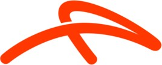

Servicio Especializado Integral de Flotas
Perfil Empresarial
Fundado en 1990, Barrese Servicio Automotor, es una empresa de gran experiencia, que ofrece soluciones mecánicas de alta tecnología para el mantenimiento de flotas de vehículos.
Pide tu Presupuesto GRATISEl servicio técnico que se merece tu flota
Ofrecemos servicios de calidad y transparencia hacia el cliente. En cada intervención marcamos la diferencia.
Escaneo Computorizado multimarca
Contamos con equipos de alta tecnologia para el chequeo, reconocimiento y solucion de errores.
Service y chequeo periódico de unidades
Ofrecemos un sistema de control periodico calendarizado con alertas por desgaste.
Gestión integral de flota
Cada unidad es considerada de manera individual contando con un unico código de bitácora y gestión de controles.
Calidad de atención garantizada
Disponemos de instalaciones equipadas con la última tecnología de diagnóstico multimarca. Nuestro enfoque se centra en la gestión integral de flotas, ofreciendo transparencia y eficiencia en cada intervención.
I Diagnóstico Computarizado
I Sistema de Inyección y Electricidad
I Servicio de retiro/entrega del vehiculo
I Asesoramiento en la compra y venta
Clientes con Flotas en Barrese
Confían en nuestro servicio integral:
 Telefónica Movistar S.A
Telefónica Movistar S.A
 Acindar S.A
Gas Naturgy
"La mecánica es nuestra especialidad. Confíenos su flota y nos haremos cargo de ella de manera integral".
- Cristian Barrese, Director EjecutivoContáctanos Hoy Mismo
Estamos ubicados en: Dr. Ignacio Arieta 5245, B1766DQU La Tablada, Provincia de Buenos Aires
Teléfono: (011) 2056-5489 /(011)4699-7783
Email: barresenet@yahoo.com.ar
Horario: Lunes a Viernes 9:30 AM - 17:30 PM hrs. Sabados 9:00 AM - 13:00 PM
Llamar AhoraTrabaja con nosotros
Envia tu curriculum a: barresenet@gmail.com